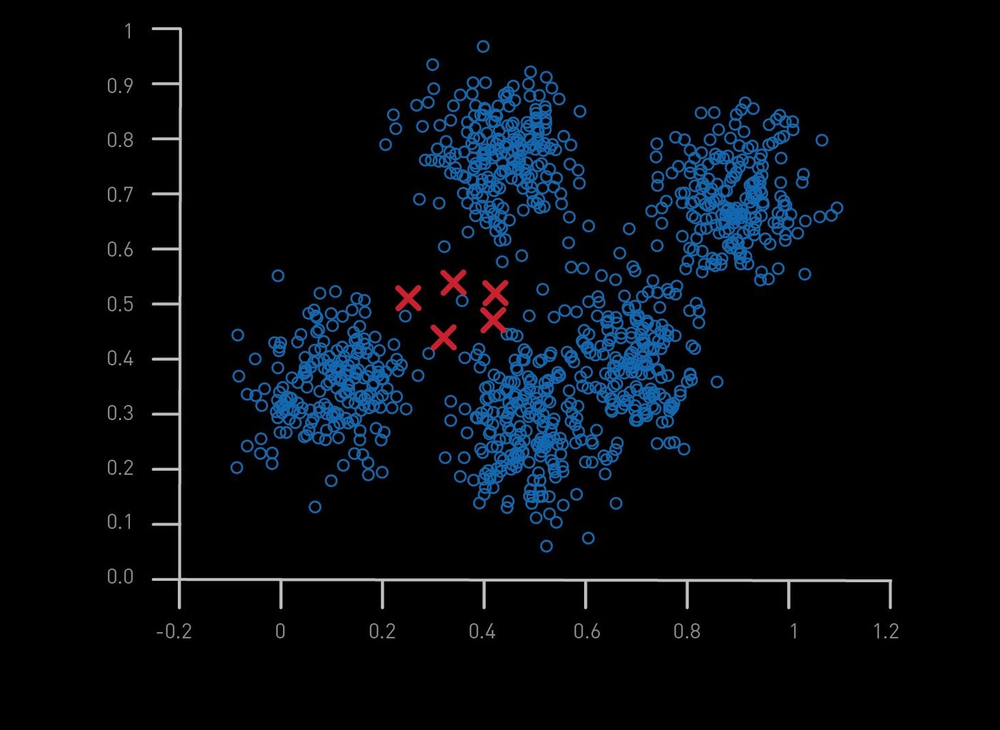
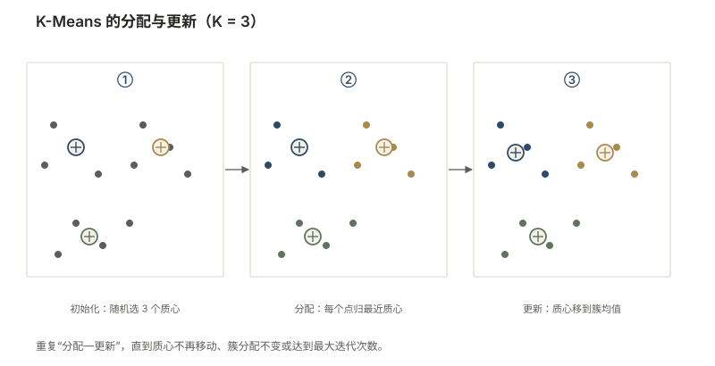
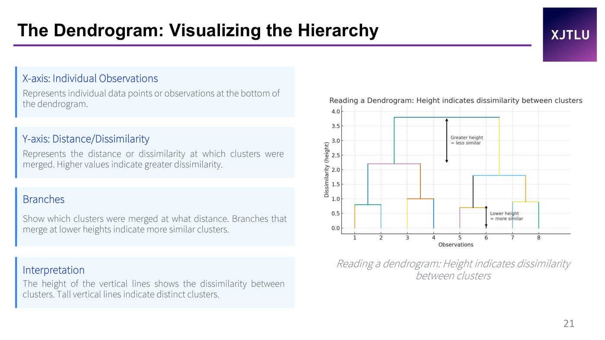

SCI101 · 第 9 章
聚类
An Introduction to Clustering for Science
虚线下划线为术语；悬停查看中文、英文与释义，完整词典见“术语”。
本章目录
本讲回答一个无标签问题：如何把相似的东西放在一起。主线是三种思路——按中心划分（K-Means）、按层级合并（层次聚类）、按密度连通（DBSCAN），最后给出选择算法与评估结果的实践准则。
本章要点
- 聚类是无监督学习：没有预定义标签，目标是按特征相似性把样本分组，使簇内相似、簇间不同。
- 相似性用距离度量：欧氏（直线）、余弦（方向夹角）、曼哈顿（城市街区绝对值之和）。
- K-Means 三步循环：选 K 与初始质心 → 分配到最近质心 → 质心移到簇均值，直到收敛。
- K-Means 需预先给定 K，对初始质心、离群点与特征尺度敏感，且假设簇为球形。
- 层次聚类用树状图（dendrogram）表达关系，不需预先给 K，靠“剪树”决定簇数；连接方式（single/complete/average）显著影响结果。
- DBSCAN 用 ε 与 MinPts 定义密度，能找任意形状并识别噪声，但参数敏感、难以处理密度差异大的数据。
- GMM 做软分配（概率），谱聚类用图与特征值处理非凸结构。
9.1 什么是聚类
聚类clustering属于无监督学习：没有预定义的标签或“答案”，我们在发现结构。讲义用四个要素概括它：
- 目标：按特征把相似的数据点分到一组；
- 相似性：同簇内的点比不同簇的点更相似；
- 输出：揭示数据中自然模式的若干簇；
- 前提：没有标签，算法自己判断“像不像”。
讲义用“原始数据 → 聚类后”的两张图说明：看似无结构的一团点，聚类后显现出分组。分类的类别由人给定，聚类的类别由数据给出。
Clustering slide 3
9.2 在科学中为什么有用
讲义按三个学科给出应用，每个都配了具体例子：
- 化学：识别反应性、毒性或光谱指纹相似的化合物群，对药物发现与材料设计至关重要；例子是把数千种化合物聚类，找出具有相似治疗性质的候选药物。
- 生物学：按蛋白标志物分类细胞类型，把表达模式相似的基因分组，识别不同细菌株；例子是基因表达分析——把在不同实验条件下表达相似的基因聚在一起，以发现功能关系。
- 环境科学：按污染水平给区域分类，按栖息地偏好给物种分组，识别不同土壤类型以做针对性干预；例子是污染监测——找出污染物谱相似的地区，优化修复策略与资源分配。
三者的共同点是：标签昂贵或不存在，但“相似”可由测量值定义。这正是聚类适用的场景。
Clustering slide 4
9.3 特征、相似性与距离
特征features是数据点可测量的属性，例如化学中的分子量、溶解度、pH；生物中的基因表达水平、细胞大小；环境中的温度、污染物浓度。讲义强调：特征就是用于比较的那些列。
相似性用距离量化，原则是“高相似 = 低距离”。三种常用度量：
| 度量 | 定义 | 几何直觉 |
|---|---|---|
| 欧氏距离 | 两点间的直线距离 | “直线飞过去” |
| 余弦相似度 | 两个向量的夹角 | 衡量方向的相似性 |
| 曼哈顿距离 | 各维绝对差之和 | “城市街区”距离 |
讲义的水样例子给出三列特征：pH、温度（°C）、溶解氧（mg/L），三个样本分别为 (6.8, 22.5, 8.2)、(7.2, 23.1, 7.9)、(8.5, 18.4, 5.3)。注意第三个数在 pH 上最高、温度与溶氧最低——它与其他两个样本的距离会明显更大，这正是聚类要捕捉的结构。
Clustering slide 5
9.4 三类主要方法
讲义按“如何定义簇”把方法分成三类，另加“其他”：
- 划分方法（partitioning，如 K-Means）：把数据分成预先给定数量的、互不重叠的簇，每个点恰好属于一个簇。
- 层次方法（hierarchical，如凝聚式）：构建树状结构（dendrogram），允许灵活的簇数，并揭示簇之间的关系。
- 密度方法（density-based，如 DBSCAN）：把簇定义为高密度区域，与稀疏区域和噪声分开。
- 其他：基于模型（如高斯混合模型 GMM）、谱聚类等更专门的方法。
讲义用四幅示意图对应四类结果：K-Means 的划分、带树状图的层次聚类、带噪声点的密度聚类、以及处理重叠或复杂边界的 GMM/谱聚类。看图时注意每类方法“画出的边界”长什么样，这是最直观的辨识依据。
Clustering slide 6–7
9.5 K-Means：三步循环
K-Means 的目标是把数据分成 K 个互不重叠的簇，每个点分配给质心centroid最近的簇。K 是用户必须事先给定的参数。应用包括市场细分、文档分类、图像压缩与科学数据分析。
算法分三步：
- 初始化：决定 K，从数据中随机选 K 个点作为初始质心。不同初始质心可能得到不同结果，因此常多次运行取最优。
- 分配：对每个点计算到所有 K 个质心的距离（通常用欧氏距离），把它分给最近的质心。结果是每个点恰好属于一个簇。
- 更新：把每个质心移到其簇内所有点的均值位置——对每个特征求平均。“K-Means”的“Means”正来自这一步。
重复分配与更新，直到满足收敛条件之一：质心不再显著移动；簇分配不再变化；达到最大迭代次数。每次迭代簇都会更精细、更稳定。


绘图提示词
Clean vector three-panel diagram of K-Means with K equals 3: left panel unlabelled points with three random centroids, middle panel points coloured by nearest centroid with assignment lines, right panel centroids moved to the mean of each coloured group with refined boundaries. Flat 2D, thin 1.5 px strokes, muted slate blue and warm grey palette, white background, English labels, no cartoon, no gradient, no shadow.
讲义提示：对复杂数据集，可能需要多次随机初始化才能找到较优聚类，这与“不同初始质心可能得到不同结果”的说明一致。
Clustering slide 8–13
9.6 选 K、优缺点与两个案例
K 必须事先给定，但最优 K 未知，讲义给出肘部法elbow method：对 K = 1 到 10 分别跑 K-Means，计算每个 K 的误差平方和（SSE）；把 SSE 对 K 作图，找“下降明显变缓”的拐点。拐点表示再增加簇带来的收益递减，是拟合与复杂度之间的平衡点。讲义的示例拐点在 K = 4。
| 优点 | 局限 |
|---|---|
| 简单、易理解，大数据上较快 | 必须预先给定 K |
| 计算效率高 | 对初始质心敏感，不同随机起点结果不同 |
| 簇较紧凑时适用于多种数据 | 假设球形簇，难以处理复杂形状 |
| 科学界熟悉、软件支持广泛 | 对离群点与特征尺度敏感；范围大的特征会主导 |
案例一是水质分类：测量 pH、溶解氧、浊度、硝酸盐（归一化后），用肘部法确定 K = 3，得到三簇——优质（高溶氧、中等 pH、低浊度与低硝酸盐）、中等、劣质（低溶氧、异常 pH、高浊度与高硝酸盐）。讲义还给出三类的数值区间：优质 pH 7.2–8.0、DO 8.5–12 mg/L；中等 pH 6.5–8.5、DO 5.0–8.4；劣质 pH <6.5 或 >8.5、DO <5.0。
案例二是基因表达：按不同细胞类型与实验条件下的表达谱聚类，得到共表达基因群，这些群常对应生物通路或过程。讲义点出一个生物学意义：把功能相关的基因归入同一转录单元，可用一个“开关”协同控制整簇基因。图中还展示了早期、中期、晚期三簇的时间表达模式。
Clustering slide 14–17
9.7 层次聚类：一棵可以剪的树
层次聚类hierarchical clustering 构建一棵树（树状图dendrogram）来表达数据点之间的关系。与 K-Means 不同，它不要求预先给定簇数——你在不同高度“剪树”来决定簇数。两种策略是凝聚式（agglomerative，自下而上，从单点开始逐步合并，本讲重点）与分裂式（divisive，自上而下，从一个大簇开始逐步拆分）。
凝聚式的步骤：每个点起初自成一簇；反复找最近的两个簇合并，直到所有点归为一簇。合并顺序构成树状图，分支高度表示簇间的不相似度。
“最近”需要定义簇与簇之间的距离，这就是连接方式linkage：
- 单连接（single）：两簇中最近两点之间的距离；容易形成“链状”细长簇。
- 完全连接（complete）：两簇中最远两点之间的距离；偏好紧凑、球形的簇。
- 平均连接（average）：两簇所有点对距离的平均；介于两者之间，是较好的折中。
讲义强调连接方式的选择会显著影响最终的层级结构，因此报告结果时必须写明用了哪种连接与距离。

Clean vector dendrogram with individual observations along the horizontal axis and dissimilarity on the vertical axis, branches merging at increasing heights, one horizontal dashed cut line crossing three vertical branches and labelled cut here for three clusters. Flat 2D, thin 1.5 px strokes, muted slate blue and warm grey palette, white background, English labels, no cartoon, no gradient, no shadow.
读图规则：横轴是个体观测；纵轴是距离/不相似度；分支表示哪些簇在什么距离合并；合并在较低高度的簇更相似；竖线越高说明两簇越不同。剪枝规则：在某一高度做水平切，切到几条竖线就得到几个簇；上下移动切线会改变簇数。
优缺点同样对称：优点是无需预设 K、提供完整层级、可视化好、可在分析后决定簇数；局限是计算量大（可达 O(n³) 或 O(n²)）、合并不可撤销、对噪声与离群点敏感、结果高度依赖距离与连接方式。
两个案例：药物化合物按分子量、LogP、氢键供体/受体与生物活性聚类，得到“化学系列”，剪树可得更宽或更细的组；植物标本按叶形、花色、茎高等形态特征聚类，树状图展示表型相似性，有助于物种分类与保护——讲义特别说明它与系统发生树概念相似，但依据的是观测相似性，不是演化历史。
Clustering slide 18–25
9.8 DBSCAN：按密度连通
DBSCAN 把簇定义为被稀疏区域隔开的高密度区域，不需要预先给定簇数，能发现任意形状的簇，并自动把离群点标为噪声。
两个参数：ε（epsilon）是邻域搜索的最大半径，回答“我看多远找邻居”；MinPts 是 ε 半径内形成稠密区所需的最少点数，回答“多少邻居才算稠密”。据此把点分为三类：
- 核心点（core point）：ε 内至少有 MinPts 个点（含自身），是簇的“种子”；
- 边界点（border point）：ε 内点数不足 MinPts，但落在某个核心点的 ε 范围内；
- 噪声点（noise point）：既非核心也非边界，是孤立点。
Clean vector scatter plot illustrating DBSCAN: large filled dots labelled core points each surrounded by a dashed epsilon circle containing several neighbours, smaller dots labelled border points on the edge of a circle, and isolated dots far away labelled noise; one dense cluster and one sparse outlier shown. Flat 2D, thin 1.5 px strokes, muted slate blue and warm grey palette, white background, English labels, no cartoon, no gradient, no shadow.
算法流程：任取一个未访问点 → 找它的 ε 邻域 → 若点数 ≥ MinPts，则它是核心点，新建一簇并把邻域内的点加入 → 对每个新加入的核心点递归扩展其邻居 → 若点数不足，先标为噪声（之后可能被其他核心点“认领”为边界点）→ 直到所有点处理完。
参数选择是 DBSCAN 的难点：ε 太小会把大量点判为噪声，太大会让不同簇合并；MinPts 的经验规则是 ≥ 维度 + 1，常用 2×维度（二维数据取 4），值越大要求越密。讲义推荐用 k-距离图k-distance graph 选 ε：把所有点到第 k 近邻的距离排序后作图，找曲线急剧上升的“肘点”。
| 优点 | 局限 |
|---|---|
| 可发现任意形状的簇 | 性能高度依赖 ε 与 MinPts |
| 有效识别并标记噪声/离群点 | 簇的密度差异很大时表现差 |
| 不需要预先指定簇数 | 高维数据困难（维度灾难） |
| 自然识别被稀疏区隔开的高密度区 | 边界点归属受处理顺序影响 |
两个案例：污染热点——用 GPS 坐标与污染物浓度，ε 定义局部邻近、MinPts 定义热点密度，空间上连片的簇即高污染区，孤立测量是背景值或假阳性，可用于精准干预；细胞结构——对显微图像中检测到的物体坐标聚类，得到细胞器聚集体，孤立点是成像噪声，有助于量化细胞组织与疾病状态变化。
Clustering slide 26–33
9.9 另两种思路：GMM 与谱聚类
高斯混合模型Gaussian mixture model（GMM）假设数据由若干个均值与协方差不同的高斯分布混合生成。它与 K-Means 的关键差别是软分配soft assignment：每个点以一定概率属于每个簇，而不是被硬性分到唯一簇。因此 GMM 能处理重叠的簇、给出不确定性度量，并适应不同大小与形状的簇。适用场合是：簇可能重叠、形状各异，或需要概率估计而非确定归属。
谱聚类spectral clustering基于图论把数据变换到另一个空间，使簇更易线性分开。三步是：在数据点之间构造相似度图；用特征值做降维；在新空间中用简单聚类（如 K-Means）。它擅长处理非凸、任意形状且连通关系复杂的簇——讲义用同心圆说明：传统聚类会把内外圈混在一起，谱聚类能正确分开。
Clustering slide 34–35
9.10 怎么选、怎么用、怎么负责
讲义给了一张决策图，可按三个问题走：是否知道 K？需要识别噪声/离群点？期望的簇形状是球形还是任意？知道 K 且不需要噪声识别、簇为球形 → K-Means；知道 K 但需要噪声识别或形状任意 → DBSCAN；不知道 K 且需要灵活簇数 → 层次聚类（靠树状图选）；不知道 K 且要处理复杂非球形 → DBSCAN 或谱聚类。附加考虑：数据集大小（K-Means 在大数据上最快）、是否需要层级关系（层次聚类能揭示）、科学背景与领域知识。
| 方法 | 是否需要 K | 形状假设 | 噪声处理 |
|---|---|---|---|
| K-Means | 需要 | 球形、紧凑 | 敏感，离群点会拉动质心 |
| 层次聚类 | 不需要（剪树决定） | 由连接方式决定 | 敏感，会扭曲合并顺序 |
| DBSCAN | 不需要 | 任意形状 | 显式标记为噪声 |
实践准则有四组。预处理：对距离类方法必须缩放特征；妥善处理缺失值（插补或删除）；检测并处理离群点；高维数据先降维。特征工程：选与本学科问题相关的特征；做特征提取得到有意义的表示；可按领域知识给特征加权。评估：做稳定性测试（换初始化重跑）；用内部指标（轮廓系数、Davies-Bouldin 指数）并做二维/三维可视化检查；记住没有唯一“正确”的聚类，取决于目标。领域知识：用专业判断解释结果，尽可能用已知信息验证，把聚类当作发现工具而非绝对真理。
讲义最后提出伦理考量：数据本身带有历史偏见时，聚类会延续甚至放大它；聚类患者记录、个人环境暴露等敏感数据要注意隐私与匿名化（即便“匿名”，聚类也可能暴露敏感模式）；不要过度解释——聚类展示的是相关，不是因果；还要考虑结果对个人、群体与环境政策的现实影响。
Clustering slide 36–38